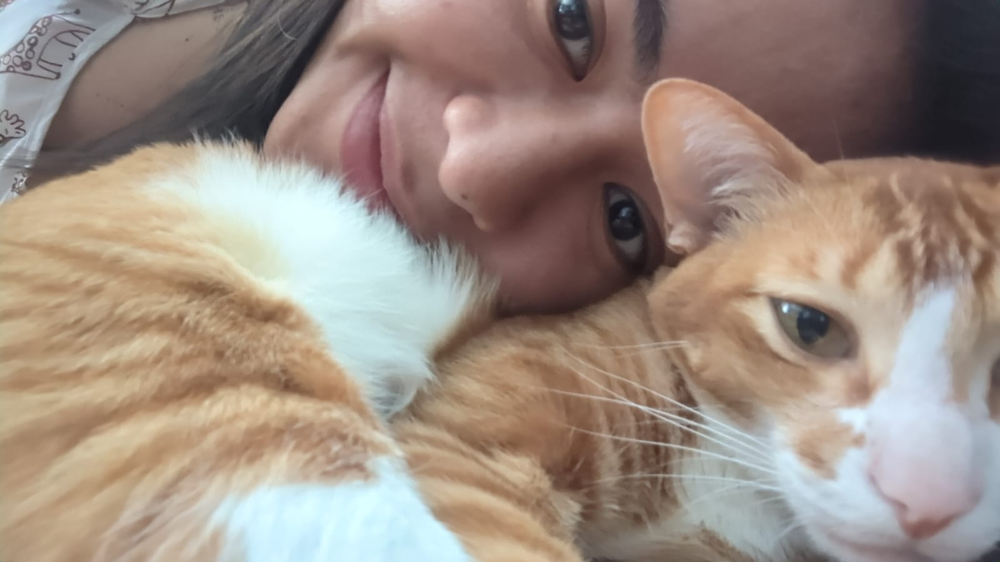

<!DOCTYPE html>
<html lang="en"></html>

<head>
    <meta charset="UTF-8" />
    <meta name="viewport" content="width=device-width, initial-scale=1.0">
    <link rel="stylesheet" href="style.css" />
    <title>RevoU FSSE 2023H2 - Alifah Syamsul - W1 Intermediate Assignment</title>
</head>

<body>
    <!-- Header and Navigation -->
    <header>
    	<nav>
        	<ul>
            	<li><a href="#home">Home</a></li>
                <li><a href="#contact">Contact</a></li>
            </ul>
        </nav>
        <h1>Hi, I'm Alifa</h1>
    </header>

    <!-- Main Content -->
    <main id="main-content">
        <section>
            <h2>📬 About me</h2>
            <p>👩🏻‍💼 I used to work as a product manager for 4,5 years. As a product manager, I worked at Traveloka, Kitabisa, and GovTech Edu; last, I worked at Cookpad UK. It looks like I moved a lot, but trust me, I didn’t actually mean to 🥹</p>
        </section>
        
        <section>
            <h2>🔫 Hobbies</h2>
            <p>🔥 I enjoy engaging in a few hobbies in my spare time. 📺 I like to watch TV series with my boyfriend; we’re currently watching Spy×Family. 🫂 On the weekends, I enjoy hanging out with my friends. 🎹 I’m also taking a flute class—I learned piano for some time, and then I decided to switch my primary instrument to the flute. 🪈 I want to pursue the Level 6 certification for flute, either in ABRSM or Trinity. 🎶 <br> 🍳 Finally, I derive a lot of enjoyment from cooking, whether trying out a new recipe or improvising with ingredients on hand. I get agitated if I don’t cook for some time. I must tell you that I cook the best <i>ayam ungkep</i> 🍗!!!</p> 

			<p>Overall, my hobbies bring me a lot of happiness. I hope. My cat brings me a lot of annoyance though, lol. 🐈 Here is an image of me and my cat:</p>
            
            <p></p>
        </section>
          
        <section>
        	<button>Say hello!</button>
        </section>
    </main>

    <!-- Footer -->
    <footer id="footer">
        <p>Copyright &copy; 2023 -  Alifah Syamsul _ RevoU Full-stack Software Engineering Program 2023H2 _ Week1 Intermediate Assignment</p>
    </footer>

    <script src="script.js"></script>

</body>
</html>